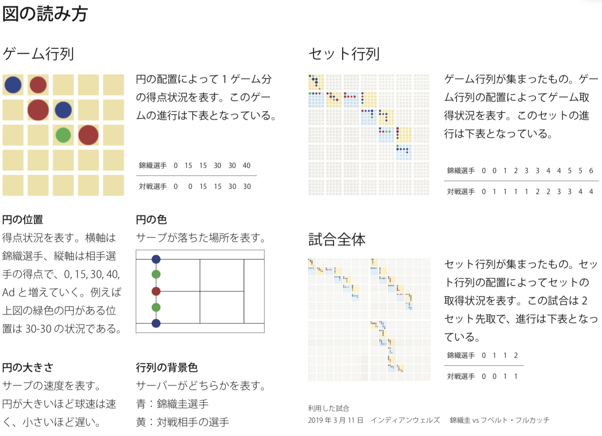
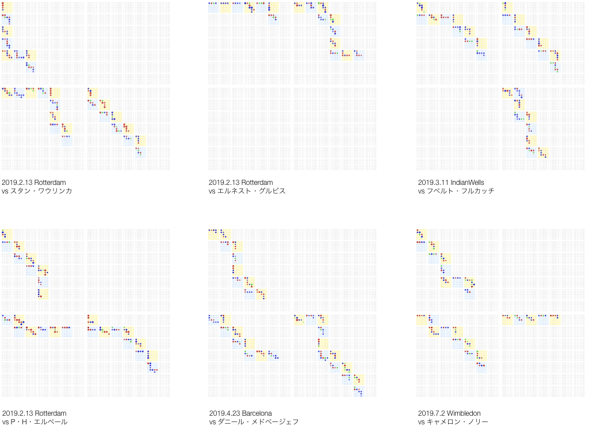

Visual K
筑波大学情報メディア創成学類の講義 情報メディア実験Bで制作した視覚表現である。本実験がenPiT準拠テーマであるため、筑波大学enPiTの最終成果発表会で発表とデモ展示を行った。
これはテニスの試合状況とサーブの速度・軌道データを合わせて分析するための視覚表現である。行列表現を用いることで、その分布から試合をどちらの選手が優位に進めたか、戦略的なサーブの打ち分け、試合の形勢に応じたゲームの運び方の傾向などを視覚的に把握することができる。なお、この可視化には錦織圭選手の試合データを利用している。
制作：小貫智弥・新貝力哉・鈴木瑠夏・長谷川諒・三浦志菜
データ：https://github.com/taikoma/NishikoriBoardData
テニス経験者に対し簡単なアンケートを行った。
読みやすさ
・サーバーとレシーバーどちらがゲームをとったのか少しわかりにくい
・縦と横でどちらがゲームをとっているか、しっかりと説明されないとわかりにくい
・ゲームをとった方とマスの進行方向が前のゲームの結果に依存しているが、そこが少し見づらい
・理解するのに時間がかかるが、理解すれば一目でどちらが勝ったのかわかる
・円の大小が少しわかりにくい
図から読み取れるサーブの傾向(または試合の傾向)
・全体的にサーブでゲームをとっている選手が多い傾向にある ・最初の 1，2 セットはストレートでセットをとっていることが多い ・最初の方のゲームではサーブの球速が速め ・試合全体を通して戦略的な打ち分けが見られた。
その他の意見
・サーブにカットがかかっているかストレートなのかどうかが大事なのではないか(カットの場合、 球速は遅くなるが攻撃的なサーブである)

